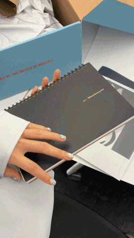
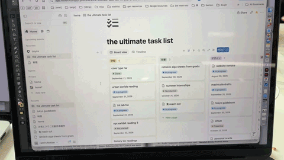
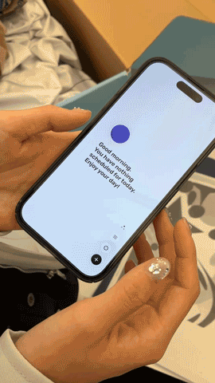
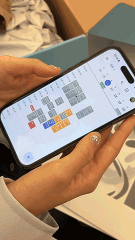

i use a bunch of things. i have 2 different calendar apps (google calendar and dawn - everyone should download dawn!!), notion for everything except scheduling, and two physical planners (my everything notebook by the brand mnemosyne that I take everywhere with me and a yellow monthly journal that i keep at home).
i use google calendar to sort out academic, club/extracurricular, work-related events - therefore is more populated during the school year.
on the other hand, dawn is more for hangouts, eating plans, going outs, non-academic events - which makes it more populated in the summer.
my yellow monthly planner is used in the same way as i use dawn for my monthly, but it also contains my journaling and acts like a personal diary on the daily.
my everything notebook contains my daily, to-dos, random ideas, quotes, notes...
i also use notion as an everything platform where i put my tasks and notes.

my everything notebook is for when i want to jot down random epiphanies that i get, it's easier to write it down physically for me.
whereas for my digital platforms, i separate it based on school and life - basically the epitome of work-life balance. since google calendar is school-exclusive, i can easily access it on my computer.
for dawn and my yellow notebook, i have both of them for the same purpose just for convenience. i prefer to physically write, but having a digital platform is easier on-the-go which acts as a back-up to my physical planner.

i usually select my planners and journals based on the paper quality. the paper in the mnemosyne notebook is super good!
(super loyal to the notebook brand mnemosyne)!
i also choose based on the format or layout of the notebook/planner.
the yellow notebook has a weekly spread where every page also contains daily boxes - showing both daily and weekly on the same page.
i used to use task apps, but i preferred the physicality of journals and planners due to the act of writing it onto paper.

★
★
★
sometimes i would use the notes app when i'm on the go to make a to-do-list, and i would occassionally use google tasks or an online notepad website on chrome (which is free to use).
i personally use anything that is closest to help remind me. i also used to have more than 3 apps, but it got too complicated.
if something is very important, then i would prefer to write it down somewhere that is more permanent or often accessed like my everything notebook.